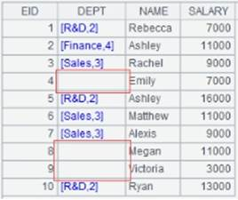
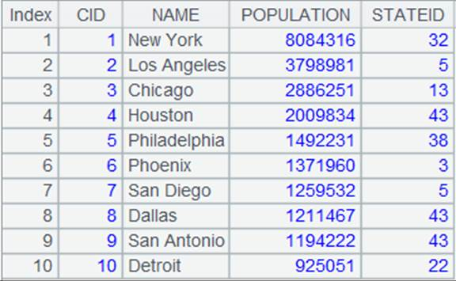
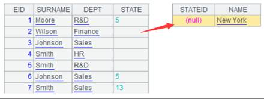
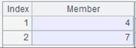
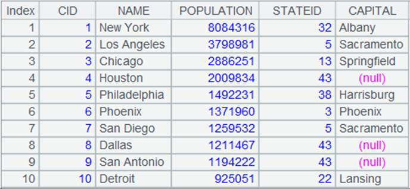
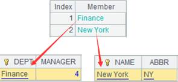
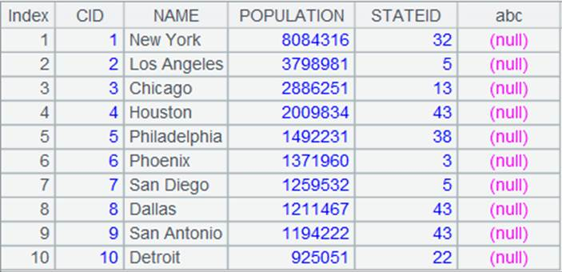

Description:
Replace values of a specified field in a cursor with the referencing field values of the corresponding record in another table.
Syntax:
cs.switch(Fi,Ai:x;¡)
Note:
The function replaces a value of Fi field in cursor cs with the corresponding record in Ai by matching the Fi value with parameter x, which is the primary key or logical primary key of Ai. An Fi field value displays as empty when there¡¯s no record in Ai that can match it.
Parameters:
|
cs |
A cursor/A multicursor |
|
Fi |
A field of a cursor |
|
Ai |
A table sequence/A record sequence |
|
x |
The primary key or logical of Ai; the parameter can be omitted if Ai has the primary key |
|
@i |
If no value corresponding to F is found, then remove this record. |
|
@d |
Perform the inverse operation of @i, which obtains the records that have no value corresponding to F. |
|
@1 |
If the F field value of a record in channel ch doesn¡¯t exist in Ai , then generate a record of the same structure as Ai with expression x being the primay key |
Return value:
The original cursor with switched field values
Example:
|
|
A |
|
|
1 |
=demo.cursor("SELECT EMPLOYEE.EID,EMPLOYEE.DEPT,EMPLOYEE.NAME, EMPLOYEE.SALARY FROM EMPLOYEE where EID<11") |
Return retrieved data as a cursor. Following is data in the cursor:  |
|
2 |
=demo.query("SELECT * FROM DEPARTMENT").keys(DEPT) |
Return result as a table sequence where DEPT field is set as the key:  |
|
3 |
=A1.switch(DEPT,A2) |
DEPT field is already set as the key of A2¡¯s table sequence, so parameter x can be omitted; the operation transfers DEPT field values in A1 with primary key (the DEPT field) values of the corresponding records in A2  Click R&D value in the first row and the following record will be displayed:  |
|
4 |
=A3.fetch() |
|
|
5 |
=demo.cursor("SELECT EMPLOYEE.EID,EMPLOYEE.DEPT,EMPLOYEE.NAME,EMPLOYEE.SALARY FROM EMPLOYEE where EID<11") |
Return retrieved data as a cursor. Following is data in the cursor:
|
|
6 |
=demo.query("SELECT * FROM DEPARTMENT where MANAGER<5") |
Return result as a table sequence  |
|
7 |
=A5.switch(DEPT,A6:DEPT) |
Match records in A5¡¯s cursor with those in the table sequence by comparing the given field in the former and the latter¡¯s specified key; for records that don¡¯t have matchs in the table sequence, DEPT field values are left empty
|
|
8 |
=A7.fetch() |
|
|
9 |
=demo.cursor("SELECT EMPLOYEE.EID,EMPLOYEE.DEPT,EMPLOYEE.NAME,EMPLOYEE.SALARY FROM EMPLOYEE where EID<11") |
Same as A5 |
|
10 |
=demo.query("SELECT * FROM DEPARTMENT where MANAGER<5") |
Same as A6 |
|
11 |
=A9.switch@i(DEPT,A10:DEPT) |
With @i option, any record that can¡¯t find a match in the table sequence is deleted  |
|
12 |
=A11.fetch() |
|
|
13 |
=demo.cursor("SELECT EMPLOYEE.EID,EMPLOYEE.DEPT,EMPLOYEE.NAME,EMPLOYEE.SALARY FROM EMPLOYEE where EID<11") |
Same as A5 |
|
14 |
=demo.query("SELECT * FROM DEPARTMENT where MANAGER<5") |
Same as A6 |
|
15 |
=A13.switch@d(DEPT,A14:DEPT) |
Contrary to @i option, @d option tells the function to return only the records that haven¡¯t matches in the table sequence
|
|
16 |
=A15.fetch() |
|
|
17 |
=demo.cursor("SELECT EMPLOYEE.EID,EMPLOYEE.DEPT,EMPLOYEE.NAME,EMPLOYEE.SALARY FROM EMPLOYEE where EID<11") |
Same as A5 |
|
18 |
=demo.query("SELECT * FROM DEPARTMENT where MANAGER<5") |
Same as A6 |
|
19 |
=A17.switch@1(DEPT,A18:DEPT) |
With @1 option, for a DEPT value in A17 that doesn¡¯t exist in A18, the function generates a record of the same structure as A18; the primay key is set as DEPT |
|
20 |
=A19.fetch() |
 |


Related functions:
Description:
Replace values of a specified field in a cluster cursor with the referencing field values of the corresponding record in another table.
Syntax:
cs.switch(Fi,Ai:x;¡)
Note:
The function replaces a value of Fi field in cursor/multicursor/cluster cursor cs with the corresponding record in Ai by matching the Fi value with parameter x, which is the primary key or logical primary key of Ai. An Fi field value displays as empty when there¡¯s no record in Ai that can match it.
Parameters:
|
cs |
A cursor/multicursor/cluster cursor |
|
Fi |
A field in the cursor |
|
Ai |
A cluster memory table |
|
x |
The primary key or logical of Ai; the parameter can be omitted if Ai has the primary key |
Options:
|
@c |
With a distributed cluster memory table, the operation won¡¯t involve a cross-node reference but it assumes that the referenced records are local |
Return value:
The switched original cursor
Example: